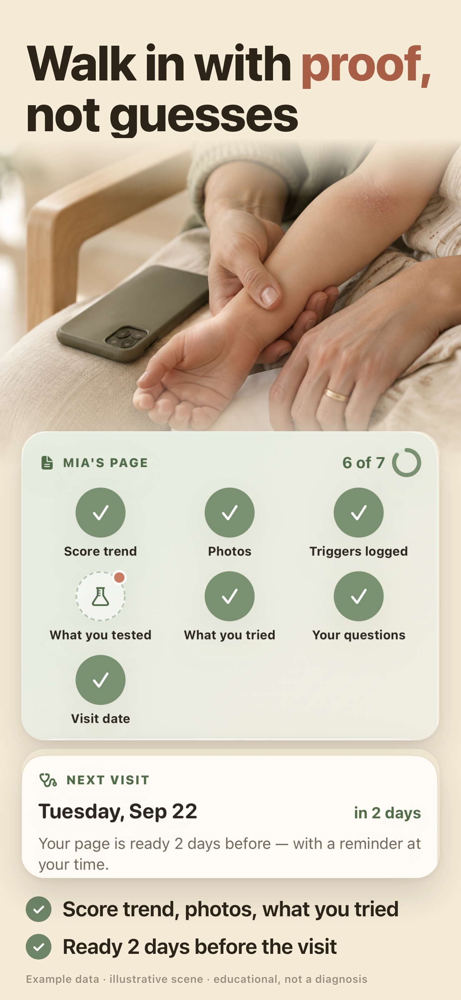
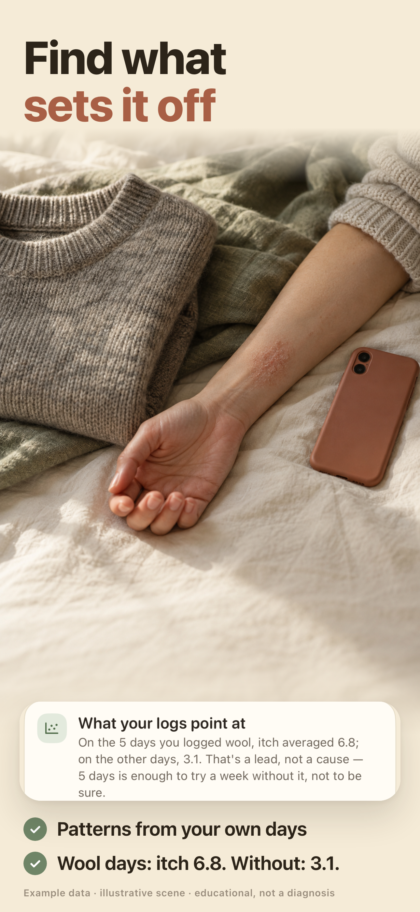
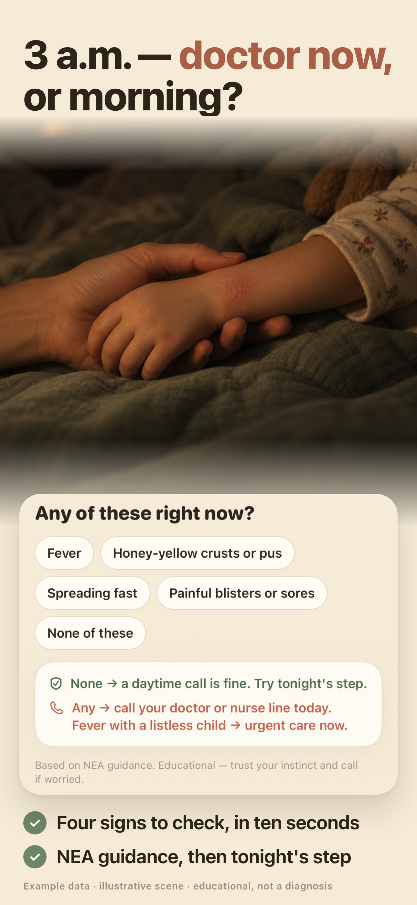
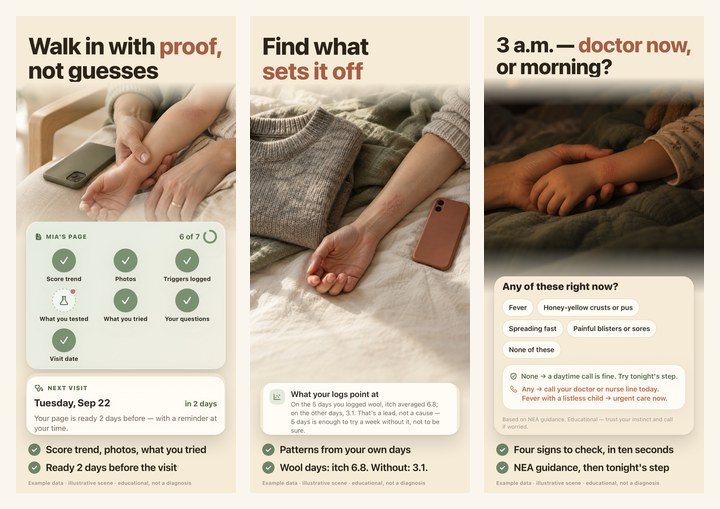
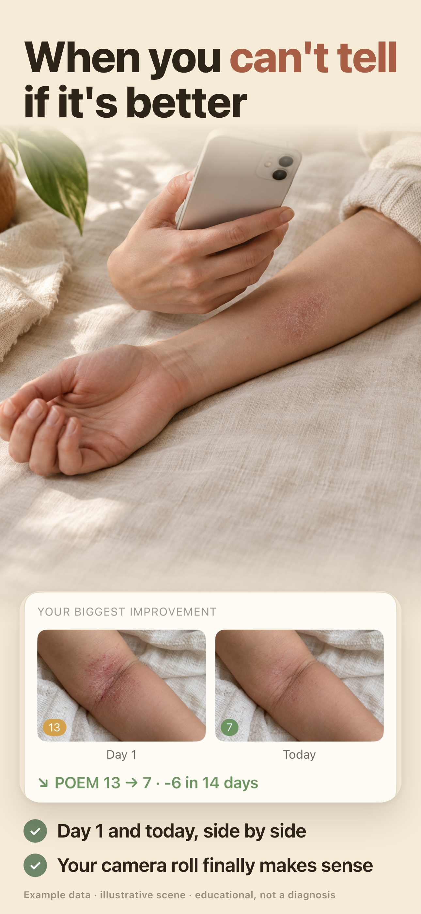
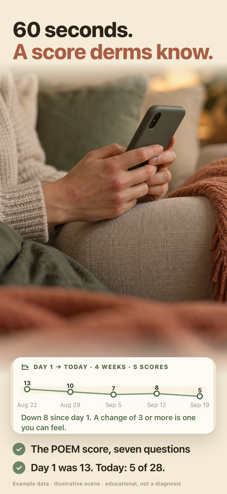
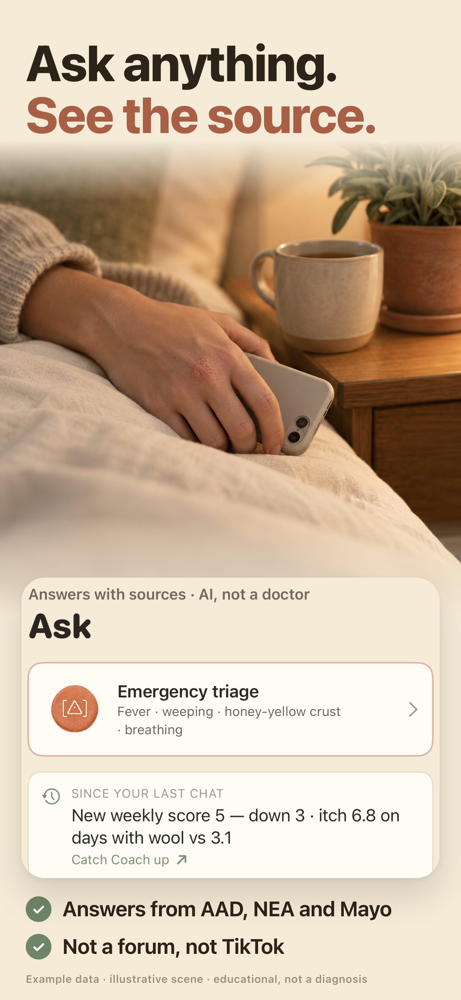
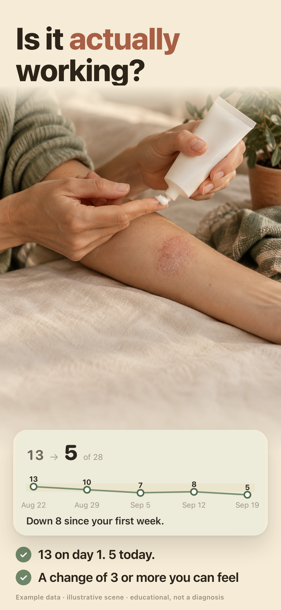
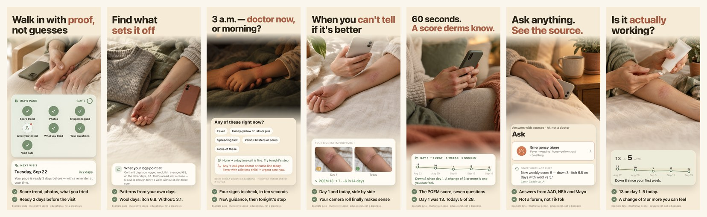

Скриншоты App Store — Salvora
Новый вариант сверху, старый план — ниже. Нажатие увеличивает кадр прямо здесь. Всё сделано заново 20 сентября 2026: Claude — боли, заголовки, вёрстка и съёмка экранов; Codex (GPT-Image) — сцены.
T · Одна боль, одна сцена, один большой заголовок
На рассмотрение
Формула кадра: огромный заголовок в две строки (47 pt на макете 430 — примерно четверть кадра, строчными, не капсом), одна предметная сцена от Codex без лиц и без запечённого текста, одна белая карточка — настоящие пиксели из собранного приложения, увеличенные так, чтобы читались в выдаче, и ровно две крупные строки пользы (19,5 pt). Больше ничего: ни рядов мелких буллетов, ни подзаголовка 11 pt внутри телефона.
Так решил не вкус, а панель Jev (24 человека × 2 прохода с обратным порядком): формат «заголовок + ровно две крупные строки» — 0.55, «только заголовок» 0.35, «заголовок + три строки» 0.09, «заголовок + мелкий подзаголовок + 4–5 буллетов» — 0.01. Сцены: кожа и руки без лиц 0.74, женщина с лицом 0.17, предметный натюрморт 0.00, кабинет врача 0.05. Капс в заголовке читается как крик (0.71), поэтому строчные.
Первые три кадра — единственные, что видно в выдаче поиска



Так это выглядит в выдаче, 220 px на кадр, без увеличения:

S04–S07 · продолжение и челленджер




Весь ряд при 220 px:

Что на каждом кадре
| Кадр | Боль (Jev) | Заголовок | Две строки | Карточка — из какого экрана сборки |
|---|---|---|---|---|
| S01 | Страница для дерматолога — №1 и по «скачаю» 0.28, и по «заплачу» 0.39 (Linda 0.53/0.68, Sarah 0.60/0.69) | Walk in with proof, not guesses | Score trend, photos, what you tried · Ready 2 days before the visit | Вкладка Doctor: карточка «Mia's page 6 of 7» + «Next visit · Tuesday, Sep 22 · in 2 days» |
| S02 | Что запускает обострение — №2 (0.20 / 0.20; Rachel 0.51) | Find what sets it off | Patterns from your own days · Wool days: itch 6.8. Without: 3.1. | Обзор месяца: блок «What your logs point at» — реальная строка движка паттернов |
| S03 | Ночь: врач сейчас или до утра — №3 (0.11; Mike 0.58) | 3 a.m. — doctor now, or morning? | Four signs to check, in ten seconds · NEA guidance, then tonight's step | Лист «Is it serious?»: четыре красных флага + вердикт, «Based on NEA guidance» |
| S04 | Фото во времени — №4 (0.10; Jessica 0.28) | When you can't tell if it's better | Day 1 and today, side by side · Your camera roll finally makes sense | Journal: «Your biggest improvement», Day 1 / Today, POEM 13 → 7 · −6 in 14 days |
| S05 | Балл за 60 секунд — 0.09 как боль, но это механика всех остальных кадров | 60 seconds. A score derms know. | The POEM score, seven questions · Day 1 was 13. Today: 5 of 28. | Today: «Day 1 → today · 4 weeks · 5 scores», 13 → 5, «Down 8 since day 1» |
| S06 | Ответы с источником — лучшая тема для последнего кадра (0.58; generic 0.78, Linda 0.66) | Ask anything. See the source. | Answers from AAD, NEA and Mayo · Not a forum, not TikTok | Вкладка Ask: «Answers with sources · AI, not a doctor», Emergency triage, «Since your last chat» |
| S07 челленджер | «Работает ли это» — самый сильный текст заголовка во всём турнире (0.67; Sarah 0.95, Jessica 0.70), но как тема кадра проигрывает Ask | Is it actually working? | 13 on day 1. 5 today. · A change of 3 or more you can feel | Обзор месяца: 13 → 5 of 28, «Down 8 since your first week» |
Порядок кадров: Jev выбрал «сначала страница для врача» 0.45 (Linda 0.63, Sarah 0.89) против «сначала триггеры» 0.24 (Rachel 0.57) и «сначала ночь» 0.16 (Mike 0.65). Для ASA это готовые CPP: Mike → S03 первым, Rachel → S02 первым, Sarah → S07.
Что показал Jev
24 синтетических человека (Linda ×4, Mike ×4, Jessica ×4, Sarah ×4, Rachel ×4, generic ×4) × 2 прохода с обратным порядком вариантов. Два прогона: боли/сцены/формат — 48/48 без ошибок, турнир заголовков — 48/48. Веса когорт: Linda .30 · Jessica .25 · Mike .15 · Sarah .15 · Rachel .15. Это структурированное мнение модели по описаниям, не опрос людей.
- Боли, от большей к меньшей (за что нажмёт «Загрузить»): страница для врача 0.28 · триггеры 0.20 · ночной триаж 0.11 · фото во времени 0.10 · балл 0.09 · «работает ли лечение» 0.09 · Ask 0.07 · ночи 0.05 · стероидофобия 0.01 · приватность 0.01.
- За что заплатит: страница для врача 0.39 (Linda 0.68, Sarah 0.69) · триггеры 0.20 · «работает ли» 0.11 · ночной триаж 0.10 (Mike 0.55) · фото 0.06 · балл 0.03 · приватность 0.00.
- Сцена: кожа/руки без лиц 0.74 · человек с лицом 0.17 (Rachel 0.45) · кабинет врача 0.05 · только интерфейс 0.03 · натюрморт без людей 0.00.
- Формат текста: две крупные строки 0.55 · только заголовок 0.35 · три строки 0.09 · мелкий подзаголовок + 4–5 буллетов 0.01.
- Реальная кожа на витрине: «узнаю свою кожу» 0.62 против «неприятно, пролистну» 0.43 — показываем честно, но мягко: сухое покраснение, без мокнутия и корок. Улыбающаяся модель с телефоном читается как сток и снижает доверие: 0.59.
- Одно число без слов непонятно (0.30), поэтому рядом всегда «of 28», «day 1 was 13» или «down 8».
- Конкретные числа в строках («6.8 против 3.1», «13 → 5») повышают доверие: 0.60.
- «Ваш дерматолог» в заголовке — нейтрально-плюс (0.48): серьёзнее, но не отпугивает. «Принесу страницу из приложения врачу» — 0.62 (Sarah 0.73, Linda 0.69).
Турнир заголовков
| Кадр | Победитель | w | a / b | 2-е место |
|---|---|---|---|---|
| S01 | Walk in with proof, not guesses | 0.55 | 0.47 / 0.64 | Your derm visit, already written 0.22 |
| S02 | Find what sets it off | 0.55 | 0.50 / 0.61 | Stop guessing what flares it 0.23 |
| S03 | 3 a.m. — doctor now, or morning? | 0.43 | 0.34 / 0.53 | Is this infected? 0.20 · Get ahead of tonight 0.20 |
| S04 | When you can't tell if it's better | 0.35 | 0.36 / 0.34 | Day 1, next to today 0.29 |
| S05 | 60 seconds. A score derms know. | 0.49 | 0.39 / 0.60 | How bad is it, really? 0.29 |
| S06 | Ask anything. See the source. | 0.20 как текст, 0.58 как тема | — | Is the cream actually working? 0.67 как текст |
| S07 | Is the cream actually working? → у нас «Is it actually working?» | 0.67 | 0.65 / 0.69 | Ask anything 0.20 |
Формулировку S07 пришлось смягчить: победивший текст обещает приписать улучшение конкретному крему, а приложение показывает только Δ-балл и дату честной проверки. Обещать причинность нельзя — это и compliance, и правда сборки.
Что не вошло и почему
- Приватность отдельным кадром — 0.01 и как причина скачать, и как причина заплатить. Это строка доверия в описании, а не слот. (Совпадает с раундом позиционирования 2026-09-19: «без аккаунта» как обещание — 0.02.)
- Стероидофобия («сколько стероида на самом деле ушло») — 0.01. Больная тема Jessica, но не то, за что открывают витрину.
- Ночи и пробуждения — 0.05: их используют, но за них не скачивают. Живёт строкой внутри S01 и S05.
- Лица и «героини» — 0.17 против 0.74 у кожи и рук. Плюс запрет на узнаваемых детей в маркетинге: в кадрах есть детская рука и предплечье, лица нет ни на одном.
- Телефон с полным интерфейсом — в 220 px это серое пятно. Вместо рамки — увеличенная карточка реальными пикселями.
Правда сборки
Все карточки — кроп настоящих снимков экрана, снятых 20.09.2026 с симулятора iPhone 17 Pro Max (1320 × 2868) на ветке love8ko/sprint, сид day30visit, аудитория «ребёнок». Ничего не перерисовано в дизайне, ни одна строка не придумана. Что это значит по каждому кадру:
- S01 — «6 of 7» и «ready 2 days before» есть в коде (
DoctorPage.Stamp, карточка Next visit). Честно. - S02 — строка «6.8 против 3.1 на других днях» приходит из
PatternSignal, порог — 7 дней логов и разница ≥1.5. На витрине это подписано как «patterns from your own days», без обещания причины. - S03 — лист красных флагов реален, формулировки NEA в коде.
- S04 — «POEM 13 → 7 · −6 in 14 days» и пара фото — Journal, фикстуры
testdata/photos(синтетические, не пациент). - S05 — график 13 → 5 из пяти недельных POEM; «60 seconds» — обещание первого чек-ина, оно же в онбординге.
- S06 — заголовок вкладки Ask буквально говорит «Answers with sources · AI, not a doctor». Ограничение: сам тред с ответом и чипами источников снять не удалось (нужны сеть и тапы), поэтому в карточке — шапка Ask, а не ответ. Это первый кандидат на пересъёмку в t2.
- S07 — только Δ-балл, без слов «крем подействовал».
Побочная находка при съёмке: на вкладке Ask в предложенных вопросах для ребёнка по имени Mia стоит «When should hydrocortisone start working for Emma?» — имя ребёнка не подставляется в один из шаблонов. Баг сборки, не витрины, но на скриншот такое попадать не должно.
Что дальше
- Утвердить шестёрку (S01–S06) или сказать, какой кадр менять.
- t2: живой тред Ask с чипами источников вместо шапки; сцена S06 — самая слабая по аффинитивности, её стоит перегенерировать (см. Failures).
- 6.5″ (1284 × 2778) — та же вёрстка на другом холсте, пересборка одной командой.
- Локализация после утверждения английской серии: de-DE («Neurodermitis») — полная пересъёмка, en-GB/CA/AU — только текст.
- CPP под когорты: Mike → S03 первым, Rachel → S02 первым, Sarah → S07 первым.
S · Старый план из репозитория (архив)
Не используется
В SCREENSHOTS.md лежал план 2026-05: 5 Custom Product Pages × 6 слотов × 5 устройств = 150 уникальных композиций, у каждой персоны свой герой: «Calm child illustration sleeping», «Anti-pharma framing», «3am UI quick triage», «Premium aesthetic + injection log», «Minimalist photo journal».
Почему он не пошёл в производство:
- Объём. 150 композиций до первого релиза — это не план, а способ не выпустить ничего. Сейчас: 6 кадров + 1 челленджер, CPP собираются перестановкой тех же кадров.
- Герои-персоны. Jev: сцена с лицом 0.17 против 0.74 у кожи и рук; «красивая женщина улыбается телефону» снижает доверие (0.59). Детские лица в маркетинге запрещены нашим же
COMPLIANCE.md. - Слоты по фичам. «Photo journal demo», «AI Coach chat», «POEM severity tracking» — это названия функций. В турнире названия функций стабильно проигрывают вопросу или результату.
- Диагностический заголовок. «Track Emma's eczema in seconds» подразумевает, что у ребёнка уже стоит диагноз, и имя ребёнка на витрине. Убрано.
- 5.5″ и iPad. Apple их больше не требует для новых приложений; 6.9″ + 6.5″ закрывают всё.
Экраны прототипа по персонам (Linda / Mike / Sarah / Rachel), которые снимались в спринте, лежат отдельно: пример. Это снимки приложения, а не кадры витрины.
{kind=link}